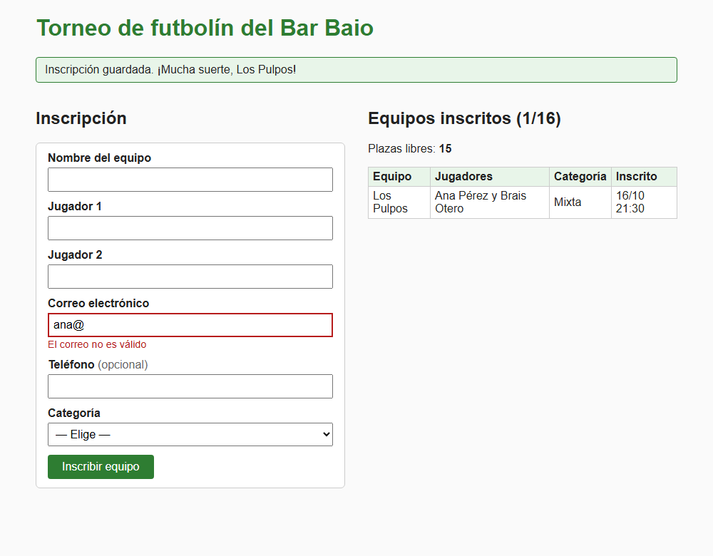

Carlos acaba de empezar a programar en PHP. El Bar Baio le encarga una página para que los equipos se apunten al torneo de futbolín. Carlos abre el editor y empieza a escribir: un poco de HTML, un if para el formulario, vuelve al HTML, prueba algo con el fichero, borra, copia un trozo de Internet... Tres horas después nada funciona y ya no sabe ni qué ha cambiado.
María se sienta a su lado: "Te has puesto a programar como un pollo sin cabeza, saltando de un sitio a otro. Vamos a hacerlo con orden: primero entendemos qué hay que hacer, luego pensamos cómo organizarlo y, al final, lo programamos parte a parte, comprobando cada parte antes de pasar a la siguiente". Juan añade: "Y cuando algo falle, no cambies cosas al azar: usa el depurador".
En estas notas aprenderás a:
Todo se explica con un ejemplo guiado que recorre el proceso completo: la inscripción en el torneo de futbolín. Su código, paso a paso, está en la carpeta Ejemplo guiado - Torneo.
Desarrollar software no es "escribir código". Antes de escribir la primera línea hay que saber qué se quiere conseguir y cómo se va a organizar; y después de escribirla hay que comprobar que hace lo que debe. El proceso tiene tres grandes fases que se repiten:
| Fase | Pregunta que responde | Qué se obtiene |
|---|---|---|
| Análisis | ¿Qué hay que hacer? ¿Qué entra y qué sale? ¿Qué datos hay que guardar? | Requisitos, ejemplos de entradas y salidas, maqueta, estructuras de datos |
| Diseño | ¿Cómo organizo la solución? | Módulos y funciones (con sus parámetros y resultados), diagramas |
| Codificación y pruebas | ¿Funciona? ¿Funciona en todos los casos? | Código probado, construido parte a parte |
Es un proceso iterativo (se repite) e incremental (en cada vuelta se añade algo que funciona). Nadie hace un análisis perfecto a la primera: al programar descubrirás casos que no habías pensado y tendrás que volver atrás. No es un fracaso: es como se trabaja.
Cuanto más tarde se descubre un error, más cuesta arreglarlo. Un requisito mal entendido se corrige en un minuto si se detecta al hablar con el cliente; si se detecta cuando la aplicación ya está terminada, puede obligar a rehacer media aplicación. Por eso merece la pena dedicar tiempo al análisis y al diseño, aunque al principio parezca que "no se avanza".
María le pide a Carlos que apague el editor de código y abra un fichero de texto en blanco: "Primero escribe con tus palabras qué tiene que hacer la página. Si no sabes explicarlo en español, no vas a saber explicárselo al ordenador".
Lo primero es leer el enunciado (o escuchar al cliente) con calma, varias veces, y convertirlo en una lista de requisitos:
htmlspecialchars".
Este es el enunciado del ejemplo guiado, tal como lo cuenta el dueño del bar:
"Quiero que los equipos se puedan apuntar al torneo de futbolín desde la web. Cada equipo
tiene un nombre y dos jugadores. Necesito un correo para avisarles y, si quieren, un
teléfono. Hay tres categorías: mixta, juvenil y sénior. Caben 16 equipos como mucho. En la
misma página quiero ver los equipos que ya están apuntados."Y estos son sus requisitos (la lista completa está en 00-analisis/requisitos.md):
| Id | Requisito funcional |
|---|---|
| RF1 | Mostrar un formulario con: nombre del equipo, jugador 1, jugador 2, correo, teléfono (opcional) y categoría. |
| RF2 | Validar los datos: nombre del equipo de 3 a 30 caracteres y no repetido; jugadores de 2 a 40 letras y distintos; correo válido; teléfono de 9 cifras que empiece por 6, 7, 8 o 9; categoría de la lista. |
| RF3 | Si hay errores, volver a mostrar el formulario con los datos escritos y un mensaje junto a cada campo incorrecto. |
| RF4 | Si todo es correcto, guardar la inscripción con la fecha y mostrar una confirmación. Recargar la página no debe inscribir dos veces. |
| RF5 | Mostrar la lista de equipos inscritos y las plazas libres. |
| RF6 | Con 16 equipos, no mostrar el formulario y avisar de que el torneo está completo. |
| Id | Requisito no funcional |
|---|---|
| RNF1 | PHP 8.2 sin frameworks ni base de datos: las inscripciones se guardan en un fichero JSON. |
| RNF2 | Seguridad: se escapa toda la salida (XSS), no se confía en la validación del navegador y el fichero se escribe con bloqueo. |
| RNF3 | Funciona sin JavaScript; página en UTF-8 y en español. |
| RNF4 | Accesible: cada campo con su <label> y los errores como texto junto al campo. |
| RNF5 | Código organizado: lógica en funciones.php, página en index.php, estilos en estilos.css. |
| RNF6 | Los límites (16 equipos, longitudes) y las categorías, en constantes. |
Un buen requisito es concreto y comprobable: al terminar, tiene que ser posible decir "sí, se cumple" o "no, no se cumple". "El formulario debe ser fácil de usar" no se puede comprobar; "cada campo tiene su etiqueta y, si es incorrecto, un mensaje de error junto a él" sí. Numera los requisitos (RF1, RF2...) para poder referirte a ellos en el código, en las pruebas y al hablar con el cliente. Y si algo no está claro (¿el teléfono es obligatorio?, ¿"Los Pulpos" y "los pulpos" son el mismo equipo?), pregunta; si no puedes preguntar, apunta la decisión que tomas.
El siguiente paso es concretar qué entra en el programa (datos que escribe el usuario, ficheros que se leen, parámetros de la URL...) y qué sale (páginas, mensajes, ficheros que se escriben). La mejor forma es escribir ejemplos concretos, antes de programar.
Si el programa funciona en la consola, crea un fichero de texto con ejemplos de entradas y de las salidas que esperas. Por ejemplo, para un programa que calcula la nota final de cada alumno a partir de un fichero:
=== notas.txt (ENTRADA) === === salida esperada (SALIDA) ===
Ana Pérez;7;8;6.5 Ana Pérez: 7.17 (Notable)
Brais Otero;4;5;3 Brais Otero: 4.00 (Suspenso)
Carmen Núñez;10;9;9.5 Carmen Núñez: 9.50 (Sobresaliente)
Diego Lago;7;;8 Línea 4: falta una nota
Eva;once;8;9 Línea 5: "once" no es una nota válida
Media del grupo: 6.89 (3 alumnos válidos)Al escribirlo te das cuenta de cosas que el enunciado no decía: ¿con cuántos decimales?, ¿qué hago si falta una nota?, ¿las líneas incorrectas cuentan para la media? Además, esos ejemplos serán después tus casos de prueba.
Si el programa tiene una interfaz gráfica, crea desde el principio un esqueleto de la aplicación: un wireframe (un boceto de la distribución, en papel o con herramientas como Excalidraw o Penpot) o una maqueta (mockup), que en web suele hacerse directamente con HTML y CSS, sin nada de PHP, con datos inventados. Sirve para enseñársela al cliente, decidir qué campos hay y dónde salen los mensajes, y además el HTML se aprovecha después.

Para el torneo, los ejemplos de entradas y salidas están en 00-analisis/entradas-salidas.txt: una inscripción correcta, campos vacíos, datos incorrectos, un nombre repetido, un intento de XSS, el torneo completo y qué pasa al recargar la página.
Ahora hay que decidir qué datos maneja el programa y dónde y cómo se guarda cada uno. Hay dos situaciones muy distintas:
a) Guardar en tiempo de ejecución (mientras se ejecuta el script, en variables):
int, float, string, bool y null. Ejemplo: el número máximo de equipos (int), el correo (string), si el torneo está completo (bool).
Elegir bien la estructura simplifica muchísimo el código. Compara tres formas de guardar un equipo:
<?php
// MAL: variables sueltas. ¿Y si hay 16 equipos? ¿$nombre1, $nombre2... $nombre16?
$nombreEquipo = 'Los Pulpos'; $jugador1 = 'Ana Pérez'; $jugador2 = 'Brais Otero';
// BIEN: un array asociativo por equipo, y una LISTA de equipos
$equipo = [
'nombre' => 'Los Pulpos',
'jugadores' => ['Ana Pérez', 'Brais Otero'], // una lista dentro del array
'email' => 'ana@example.com',
'categoria' => 'mixta',
];
$equipos[] = $equipo; // añadir a la lista
echo count($equipos); // cuántos hay
echo $equipos[0]['jugadores'][1]; // "Brais Otero"
// TAMBIÉN BIEN (tema 3): un objeto, que además puede validar sus datos
$equipo = new Equipo('Los Pulpos', ['Ana Pérez', 'Brais Otero'], 'ana@example.com', 'mixta');b) Guardar entre ejecuciones o de forma centralizada: persistencia. Una aplicación web tiene una particularidad muy importante:
HTTP no tiene estado. Cada vez que el navegador pide una página, el script PHP se ejecuta desde cero y, al terminar, todas sus variables desaparecen. Si un dato tiene que sobrevivir a la siguiente petición (los equipos inscritos, el carrito, la partida...), hay que guardarlo en algún sitio.
| Dónde se guarda | Cuánto dura | Quién lo ve | Ejemplo |
|---|---|---|---|
| Variables | Solo durante la petición | Ese script | Los errores de validación |
Campos ocultos del formulario (hidden) | Mientras el usuario siga enviando el formulario | El usuario (¡y puede cambiarlo!) | El estado de un juego en la tarea del tema 2 |
| Cookies y sesiones (más adelante en el módulo) | Mientras dure la sesión o la cookie | Ese usuario | Usuario identificado, carrito |
| Ficheros (texto, CSV, JSON) | Permanente | Todos los usuarios | Los equipos del torneo (datos/equipos.json) |
| Bases de datos (tema 4) | Permanente | Todos los usuarios | Lo mismo, con búsquedas y muchos usuarios a la vez |
En el ejemplo guiado los datos quedan así:
| Dato | Estructura | Dónde |
|---|---|---|
| Datos del formulario | array asociativo campo => string | petición ($_POST) |
| Errores de validación | array asociativo campo => mensaje | variable |
| Un equipo | array asociativo (nombre, jugadores, email, telefono, categoria, fecha) | fichero |
| Todos los equipos | lista de equipos | fichero JSON (persistencia) |
| Máximo de equipos y categorías | constantes | código |
Cuando los datos son muchos y están relacionados entre sí, las tablas anteriores se quedan cortas. Para diseñar una base de datos se usan el diagrama Entidad-Relación (las "cosas" que hay que guardar, sus atributos y cómo se relacionan) y el modelo relacional (las tablas que resultan). Los verás en el tema 4 y en el módulo de Bases de datos.
Modelo relacional (las tablas que salen del diagrama; la clave primaria, subrayada en el diagrama):
equipos (id, nombre, email, telefono, categoria, fecha)
jugadores (id, nombre, equipo_id) equipo_id -> equipos.id (clave ajena)Carlos ya sabe qué tiene que hacer la página, pero sigue pareciéndole un problema enorme. Juan le dibuja en una servilleta una caja con el nombre de la página y, debajo, cinco cajas más pequeñas: "Ahora ya no tienes un problema grande, tienes cinco pequeños. Y cada uno lo puedes partir otra vez".
El principio de divide y vencerás consiste en descomponer un problema grande en problemas más pequeños, y estos en otros más pequeños, hasta que cada uno sea tan sencillo que se pueda resolver con una función de pocas líneas. Es el diseño descendente (top-down).
Casi todos los scripts PHP que atienden un formulario tienen esta misma estructura, en este orden:
<?php
require_once __DIR__ . '/funciones.php';
// 1. Inicializar: cargar datos, valores por defecto
// 2. Recepción y validación de datos (si la petición es POST)
// 3. Procesar los datos y persistirlos (si no hay errores)
// 4. Preparar los mensajes de error o informativos
// 5. Enviar al cliente la página (HTML), sin lógica: solo mostrar variables ya preparadas
?>
<!DOCTYPE html>
...Para que las funciones sean realmente útiles:
validarEmail(), cargarEquipos(), crearEquipo().
return. Evita las variables globales y evita hacer echo dentro de las funciones de lógica: así se pueden probar y reutilizar.
Una página web cambia de aspecto según lo que haya pasado: la primera visita, un envío con errores, un envío correcto... Un diagrama de estado-transición dibuja los estados posibles (cajas) y las transiciones entre ellos (flechas), indicando qué las provoca. En la versión "ampliada" se añaden a cada flecha la condición entre corchetes y la acción que se realiza: evento [condición] / acción.
Dibujarlo antes de programar ayuda a no olvidar casos: ¿qué se ve al recargar la página después de inscribirse?, ¿qué pasa si alguien envía el formulario cuando ya no quedan plazas? Cada flecha se convierte después en un if del código.
Si después de guardar los datos el script mostrara directamente la página de confirmación, al pulsar F5 el navegador volvería a enviar el formulario y el equipo se inscribiría dos veces. La solución es el patrón POST/Redirect/GET (PRG): tras procesar el POST, el servidor responde con una redirección (header('Location: index.php?ok=1'); exit;, código 302) y el navegador hace una petición GET nueva. Es la flecha de la parte superior del diagrama.
Cuando la solución se programe con objetos, el diagrama de clases UML muestra cada clase con sus atributos y métodos (- privado, + público) y las relaciones entre clases. Así quedaría el torneo con programación orientada a objetos:
Por fin, Carlos puede abrir el editor. "¿Y ahora lo escribo todo?", pregunta. "Ni se te ocurra", responde María. "Vas a construirlo por capas: primero algo que se vea, luego algo que funcione a medias, luego algo que funcione entero. Y cada capa la pruebas antes de seguir".
El desarrollo incremental consiste en ir añadiendo funcionalidad parte a parte: se programa una parte pequeña, se prueba, se corrige y, solo cuando funciona, se pasa a la siguiente. Así, cuando algo falla, el error está casi seguro en lo último que has escrito.
NO intentes resolver todo de golpe, saltando de un lugar a otro como un pollo sin cabeza. Escribir 200 líneas seguidas y probarlas al final garantiza horas de búsqueda de errores: no sabrás cuál de las 200 líneas falla, y probablemente fallen varias a la vez.
El ejemplo guiado está construido así. Cada carpeta contiene la aplicación completa tal como queda al terminar ese paso, con los mismos nombres de fichero, para poder compararlas:
| Carpeta | Qué se añade | Requisitos que cumple |
|---|---|---|
paso1-maqueta | Solo HTML y CSS, con datos inventados | (ninguno: es para validar la interfaz con el cliente) |
paso2-todos | La estructura del código con comentarios TODO y las funciones vacías | (ninguno, pero ya se ejecuta) |
paso3-validacion | Recepción y validación de los datos; formulario que conserva lo escrito y muestra errores | RF1, RF2, RF3 |
paso4-persistencia | Guardar y cargar en JSON, lista de equipos, plazas, PRG | Todos |
paso5-refactorizado | Solución completa: el mismo comportamiento con el código mejor organizado | Todos |
Para ver qué cambia de un paso a otro, desde una terminal abierta en la carpeta del ejemplo:
git diff --no-index "paso3-validacion" "paso4-persistencia"En Visual Studio Code: selecciona los dos ficheros en el explorador (con Ctrl), botón derecho, Comparar seleccionados.
Usa git desde el primer día, aunque trabajes solo: haz un commit cada vez que termines una parte y funcione (git commit -m "Validación del correo"). Si te lías, puedes volver a la última versión buena (git restore o git checkout) y ver exactamente qué has cambiado desde entonces (git diff).
Se crean los ficheros que hagan falta (index.php, estilos.css...) solo con HTML y CSS. Aunque el fichero se llame .php, todavía no tiene PHP. Se incluyen ejemplos de todos los estados (un error, un mensaje de confirmación, una fila en la tabla) para ver cómo quedan (Figura 2).
Antes de programar, se escriben como comentarios las partes principales de lo que hay que hacer, en el orden en que se harán, marcadas con TODO ("por hacer"). Es el diseño del apartado 3 trasladado al código:
<?php
require_once __DIR__ . '/funciones.php';
// 1. Inicializar
// TODO (paso 3): $datos con los 6 campos vacíos, $errores vacío, $mensaje vacío
// TODO (paso 4): $equipos = cargarEquipos()
// 2. Recepción y validación de datos
// TODO (paso 3): si la petición es POST: $datos = recogerDatos(); $errores = validarInscripcion(...)
// 3. Procesar y persistir los datos
// TODO (paso 4): si no hay errores: crearEquipo, añadirlo, guardarEquipos y redirigir a ?ok=1
// 4. Mensajes de error o informativos
// TODO (paso 4): si llega ?ok=1, mensaje "Inscripción guardada. ¡Mucha suerte, <equipo>!"
// 5. Enviar al cliente la páginaEn funciones.php se escriben las firmas de las funciones (nombre, parámetros y tipo del resultado) con un TODO y un valor provisional (return [];), para que la página ya se pueda ejecutar:
<?php
function validarInscripcion(array $datos, array $equipos): array
{
// TODO (paso 3): equipo: obligatorio, de 3 a 30 caracteres, no repetido
// TODO (paso 3): jugador1 y jugador2: de 2 a 40 letras, distintos
// TODO (paso 3): email válido; teléfono opcional (9 cifras); categoría de la lista
return [];
}Instala en VS Code una extensión para los TODO, como Todo Tree: busca todos los comentarios TODO y FIXME del proyecto y los muestra en un panel lateral, de forma que siempre sabes qué te queda por hacer. Cuando termines una parte, borra su TODO.
Es la parte más delicada: los datos llegan del usuario y pueden ser cualquier cosa (vacíos, demasiado largos, con otro formato, maliciosos...). La validación del navegador (required, type="email") es una ayuda para el usuario, pero no es seguridad: se puede saltar en un segundo con las herramientas del navegador. Por eso el formulario del ejemplo lleva novalidate: para que puedas comprobar que el servidor valida.
Funciones más usadas para recibir y validar:
| Función | Para qué | Ejemplo |
|---|---|---|
$_POST['x'] ?? '' | Leer un campo sin avisos si no existe | $email = $_POST['email'] ?? ''; |
is_string() | Comprobar que no han enviado un array (email[]=...) | is_string($valor) ? trim($valor) : '' |
trim() | Quitar los espacios del principio y del final | trim(' Ana ') da "Ana" |
mb_strlen() | Longitud en caracteres (strlen cuenta bytes: la ñ ocupa 2) | mb_strlen('Peña') da 4 |
filter_var() | Validar formatos estándar: correo, entero, URL, IP... | filter_var($email, FILTER_VALIDATE_EMAIL) |
preg_match() | Validar un formato propio con una expresión regular | preg_match('/^[6789]\d{8}$/', $tel) |
in_array(), array_key_exists() | Comprobar que el valor está en una lista blanca | array_key_exists($cat, CATEGORIAS) |
checkdate(), createFromFormat() | Validar fechas | (apuntes de fecha y hora) |
<?php
// Del paso 3 (funciones.php): validación del correo y del teléfono
if ($datos['email'] === '') {
$errores['email'] = 'Escribe un correo electrónico';
} elseif (filter_var($datos['email'], FILTER_VALIDATE_EMAIL) === false) {
$errores['email'] = 'El correo no es válido';
}
if ($datos['telefono'] !== '' && !preg_match('/^[6789]\d{8}$/', str_replace(' ', '', $datos['telefono']))) {
$errores['telefono'] = '9 cifras, empezando por 6, 7, 8 o 9';
}Los errores se guardan en un array campo => mensaje. Así, en el HTML, cada campo puede mostrar su propio error y el formulario puede conservar lo que el usuario escribió (se llama formulario pegajoso o sticky):
<input type="email" id="email" name="email" value="<?= e($datos['email']) ?>">
<?php if (isset($errores['email'])): ?><p class="error"><?= e($errores['email']) ?></p><?php endif; ?>Valida en la entrada, escapa en la salida. htmlspecialchars() (en el ejemplo, la función e()) no es una función de validación: convierte <, >, &, " y ' en entidades HTML para que el navegador los muestre como texto y no los interprete como código (evita los ataques XSS). Se aplica justo al mostrar un dato en la página, no al recibirlo: si lo aplicas al recibir y guardas el resultado, el fichero queda lleno de & y <, las longitudes cambian y, al mostrarlo otra vez, sale escapado dos veces (&amp;). Su contraria, htmlspecialchars_decode(), casi nunca hace falta: solo para recuperar textos que alguien guardó ya escapados por error.
<?php
$nombre = 'Tom & Jerry <3';
echo htmlspecialchars($nombre); // Tom & Jerry <3 (en la página se ve bien)
echo htmlspecialchars(htmlspecialchars($nombre)); // Tom &amp; Jerry &lt;3 (¡escapado dos veces!)
echo htmlspecialchars_decode('Tom & Jerry'); // Tom & JerryCon los datos ya validados se procesan (en el ejemplo, se convierten en un equipo con la fecha de inscripción y el teléfono sin espacios) y se persisten. Después, PRG:
<?php
// 3. Procesar y persistir los datos (paso 4, index.php)
if ($errores === []) {
$equipos[] = crearEquipo($datos);
if (guardarEquipos($equipos)) {
header('Location: index.php?ok=1'); // POST/Redirect/GET: F5 no repite la inscripción
exit;
}
$errores['general'] = 'No se ha podido guardar la inscripción. Inténtalo más tarde.';
}Fíjate en que también se tiene en cuenta que guardar puede fallar (disco lleno, permisos...): el usuario recibe un mensaje en lugar de una página en blanco.
Probar no es "abrir la página y ver que sale algo". Es comprobar, de forma sistemática, que se cumplen todos los requisitos. Los ejemplos de entradas y salidas del análisis se convierten en casos de prueba: una entrada concreta y la salida que se espera. Hay que probar:
| Caso | Entrada | Salida esperada | ¿Pasa? |
|---|---|---|---|
| 1 | Datos correctos | Redirección a ?ok=1, mensaje de confirmación, 15 plazas libres | Sí |
| 2 | Todo vacío | 5 errores (el teléfono es opcional) | Sí |
| 3 | LP, jugadores Ana y ana, correo ana@... | Un error por campo y se conservan los datos | Sí |
| 4 | los pulpos (ya existe Los Pulpos) | "Ya hay un equipo con ese nombre" | Sí |
| 5 | <script>alert(1)</script> | Error de formato; el texto se ve, no se ejecuta | Sí |
| 6 | 16 equipos inscritos | Sin formulario; un POST da "El torneo está completo" | Sí |
| 7 | F5 después de inscribirse | No se inscribe dos veces | Sí |
Cada vez que cambies algo, vuelve a pasar todas las pruebas, no solo la de lo que has cambiado: arreglar una cosa a menudo estropea otra. Los programadores profesionales automatizan las pruebas (en PHP, con PHPUnit) para que se ejecuten con un solo comando.
Cuando una prueba falla, hay que depurar: encontrar por qué el programa no hace lo que debe. La regla de oro: no cambies cosas al azar "a ver si así va". Hay que observar qué hace realmente el programa, paso a paso, y compararlo con lo que debería hacer.
En el entorno de desarrollo, PHP debe mostrar todos los errores (error_reporting = E_ALL y display_errors = On en php.ini; en un servidor real, display_errors = Off y los errores al fichero de log). El mensaje dice qué pasa, en qué fichero y en qué línea:
| Mensaje | Causa habitual |
|---|---|
Parse error: syntax error, unexpected ... | Falta un ;, una llave o unas comillas (a menudo en la línea anterior) |
Warning: Undefined variable $x / Undefined array key "x" | Variable sin inicializar o campo del formulario que no ha llegado (usa ?? '') |
Fatal error: Uncaught Error: Call to undefined function | Nombre mal escrito o falta el require_once |
Fatal error: Uncaught TypeError | Se pasa a una función un tipo que no espera (un array en lugar de un string...) |
Warning: Cannot modify header information - headers already sent | Se ha enviado algo (HTML, un espacio, un echo) antes de header() |
| Página en blanco | Error con display_errors = Off: míralo en el log de Apache/PHP |
var_dump($variable), print_r($array) o error_log(...) en mitad del código permiten ver un valor, pero obligan a modificar el código (y a acordarse de quitarlo) y solo muestran lo que pensaste mirar. Para algo más que un vistazo rápido, usa el depurador.
Con Xdebug (la extensión de PHP) y la extensión PHP Debug de VS Code puedes ejecutar el código paso a paso y ver el valor de todas las variables en cada momento. En el XAMPP del aula ya está configurado en php.ini:
zend_extension=xdebug
xdebug.mode=develop,debug
xdebug.start_with_request=yes| Acción | Tecla | Para qué |
|---|---|---|
| Punto de ruptura (breakpoint) | F9 (o clic a la izquierda del número de línea) | La ejecución se detiene en esa línea |
| Iniciar / continuar | F5 | Hasta el siguiente punto de ruptura ("Listen for Xdebug" para páginas web; "Launch currently open script" para la consola) |
| Paso a paso por encima (Step Over) | F10 | Ejecuta la línea entera (sin entrar en las funciones) |
| Paso a paso por dentro (Step Into) | F11 | Entra en la función que se llama en esa línea |
| Salir (Step Out) | Mayús + F11 | Termina la función actual y vuelve a quien la llamó |
Mientras está detenido, el panel VARIABLES muestra todas las variables (también $_POST, $_GET, $_SERVER), INSPECCIÓN (WATCH) permite escribir expresiones (mb_strlen($nombre), count($equipos) >= MAX_EQUIPOS) y PILA DE LLAMADAS (CALL STACK) dice por qué funciones se ha llegado ahí. Con clic derecho en un punto de ruptura se puede poner una condición (por ejemplo, que solo se detenga cuando $i === 15).
En Ejemplo guiado - Torneo/depuracion/buscar-los-errores.php hay tres funciones del torneo con un error de lógica cada una (no hay mensajes de PHP: simplemente, el resultado no es el esperado). El script ejecuta unas pruebas y dice cuáles fallan:
FALLA 16 equipos: no quedan plazas: obtenido true, esperado false
FALLA teléfono "600 123 456": obtenido '', esperado '600123456'
FALLA nombre "Los Ñandús" (10 letras): obtenido false, esperado trueCon un punto de ruptura en cada función y F10 se encuentran enseguida:
return count($equipos) <= MAX_EQUIPOS; con 16 equipos da true: debe ser <. Es un error por uno (off-by-one), típico de los límites: por eso hay que probar los casos límite.
str_replace(' ', '', $telefono); no cambia $telefono: devuelve el texto nuevo, y se estaba perdiendo. En el panel VARIABLES se ve que $telefono sigue con espacios. Debe ser $telefono = str_replace(...).
strlen('Los Ñandús') vale 12 (cuenta bytes; la Ñ y la ú ocupan 2 en UTF-8). Se ve añadiendo strlen($nombre) en INSPECCIÓN. Debe ser mb_strlen.
La solución comentada está en buscar-los-errores_solucion.php.
Con F12 en el navegador se abren las herramientas de desarrollo. Para un programador de PHP las más útiles son:
value tiene el campo?). Se puede editar en vivo: quita el maxlength o cambia una opción del <select> y envía el formulario para comprobar que el servidor valida.
Location), los datos enviados (pestaña Payload: lo que llega a $_POST) y la respuesta. Activa "Preservar registro" (Preserve log) para no perder la petición POST tras la redirección.
A veces el problema no está en el código, sino en la comunicación: ¿la petición llega?, ¿al servidor correcto?, ¿está escuchando Apache?
curl -X POST -d "equipo=Los Pulpos" http://localhost/torneo/index.php. Muy útiles para probar que el servidor valida.
nmap localhost.
localhost en Windows hace falta el adaptador Npcap Loopback.
Analizar el tráfico o los puertos de equipos o redes que no son tuyos, o sin permiso, puede ser un delito. Usa nmap y Wireshark solo en tu propio equipo, en las máquinas del aula o en redes en las que tengas autorización expresa.
Los asistentes de IA pueden ayudar mucho... o impedir que aprendas. Algunas pautas:
strftime o mysql_query, que ya no existen). Ejecútalo, depúralo y consulta la documentación oficial.
MAL: "hazme un formulario de inscripción de un torneo en php"
BIEN: "Estoy aprendiendo PHP 8.2. En este código (lo pego abajo) el campo teléfono siempre da
error aunque escriba '600 123 456'. Espero que acepte los espacios. No me des la
solución: dime qué debería mirar en el depurador para encontrar el fallo."Refactorizar es cambiar la estructura del código sin cambiar lo que hace, para que sea más fácil de leer, de mantener y de ampliar. Se hace cuando ya funciona (y las pruebas pasan), en cambios pequeños, y después de cada cambio se vuelven a pasar las pruebas: deben seguir dando lo mismo.
Señales de que el código necesita una refactorización (los programadores las llaman code smells, "malos olores"):
| Señal | Refactorización |
|---|---|
| Código repetido (copiar y pegar) | Sacarlo a una función con parámetros |
Números mágicos (16, 30, 40 sueltos por el código) | Constantes con nombre (MAX_EQUIPOS) |
| Funciones largas que hacen muchas cosas | Dividirlas en funciones pequeñas |
Nombres poco claros ($a, $x2, procesar()) | Renombrar con nombres que expliquen qué es |
| Comentarios que explican un código confuso | Reescribir el código para que se entienda solo |
| Lógica mezclada con HTML | Preparar las variables antes y dejar el HTML solo para mostrar |
En el ejemplo guiado, el paso 4 ya cumple todos los requisitos, pero la validación de los dos jugadores está repetida y el HTML de los cinco campos de texto, también. En el paso 5 se refactoriza:
<?php
// ANTES (paso 4): el mismo bloque, dos veces (una por jugador)
if ($datos['jugador1'] === '') {
$errores['jugador1'] = 'Escribe el nombre del jugador';
} elseif (!preg_match("/^[\\p{L} '-]{2,40}$/u", $datos['jugador1'])) {
$errores['jugador1'] = 'De 2 a 40 letras (se admiten espacios, apóstrofos y guiones)';
}
// ... y otra vez igual para 'jugador2'
// DESPUÉS (paso 5): una función pequeña que se usa dos veces, y el patrón en una constante
function validarJugador(string $nombre): ?string
{
return match (true) {
$nombre === '' => 'Escribe el nombre del jugador',
!preg_match(PATRON_JUGADOR, $nombre) => 'De 2 a 40 letras (se admiten espacios, apóstrofos y guiones)',
default => null,
};
}
$errores = [
'jugador1' => validarJugador($datos['jugador1']),
'jugador2' => validarJugador($datos['jugador2']),
// ...
];Los cinco bloques de HTML de los campos de texto se sustituyen por una función htmlCampoTexto() y un foreach sobre una constante que describe los campos. Después de refactorizar, los siete casos de prueba dan exactamente el mismo resultado que en el paso 4.
Terminada una vuelta, se vuelve a empezar con la siguiente funcionalidad o con los cambios que pida el cliente. Por ejemplo, si el dueño del bar pide ahora que un equipo pueda anular su inscripción:
anularInscripcion(), nuevo estado y nuevas flechas en el diagrama de estado-transición.
| Fase | Antes de pasar a la siguiente, comprueba que... |
|---|---|
| Análisis | Tienes los RF y RNF numerados y comprobables; has escrito ejemplos de entradas y salidas (incluidos los casos raros); tienes una maqueta; sabes qué datos hay, de qué tipo son y dónde se guarda cada uno |
| Diseño | Has dividido el problema en partes y funciones con nombre, parámetros y resultado; sabes qué estados tiene la página y qué provoca cada cambio |
| Codificación | Vas parte a parte, cada parte probada antes de seguir; no quedan TODOs; validas toda la entrada en el servidor y escapas toda la salida |
| Pruebas | Pasan todos los casos de prueba, también los límite y los maliciosos; no hay avisos de PHP |
| Refactorización | No hay código repetido ni números mágicos; las funciones son cortas y con buenos nombres; las pruebas siguen pasando |
| Error | Cómo evitarlo |
|---|---|
| Ponerse a programar sin entender el problema | Escribe primero los requisitos y ejemplos de entradas y salidas |
| Escribirlo todo y probar al final | Desarrollo incremental: pequeño, probar, siguiente |
| Cambiar cosas al azar cuando algo falla | Lee el mensaje de error y usa el depurador |
| Probar solo el caso "bueno" | Prueba los límites, los vacíos y los datos maliciosos |
| Confiar en la validación del navegador | Valida siempre en el servidor |
| Escapar al recibir los datos, o no escapar nunca | Valida en la entrada, escapa (htmlspecialchars) en la salida |
Usar strlen con textos en español | mb_strlen cuenta caracteres |
| Olvidar que HTTP no tiene estado | Decide en el análisis dónde se guarda cada dato entre peticiones |
| Copiar y pegar código (de Internet, de la IA o de otra parte del programa) | Entiéndelo; si se repite, conviértelo en una función |
| No guardar versiones | git: un commit por cada parte que funciona |
Todos los ficheros del ejemplo están en la carpeta Ejemplo guiado - Torneo. Para probarlo, abre una terminal en esa carpeta, ejecuta php -S localhost:8000 y visita http://localhost:8000/paso4-persistencia/ (o cualquier otro paso); o cópiala en htdocs de XAMPP.
| Carpeta o fichero | Contenido |
|---|---|
00-analisis/requisitos.md | Enunciado, requisitos funcionales y no funcionales, datos |
00-analisis/entradas-salidas.txt | Ejemplos de entradas y salidas: los casos de prueba |
paso1-maqueta ... paso5-refactorizado | La aplicación al terminar cada paso (el paso 5 es la solución completa) |
depuracion/buscar-los-errores.php | Ejercicio de depuración con Xdebug (y su solución) |
htmlspecialchars: al recibir o al mostrar? Al mostrar.
$_POST en el panel VARIABLES del depurador.
header('Location: ...') después de guardar.